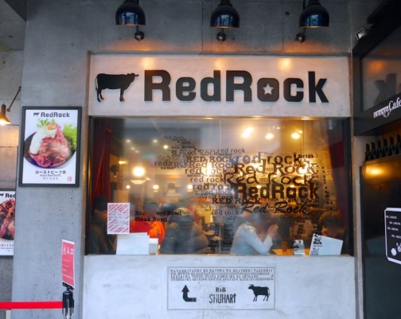

回上一頁
長崎站公車時刻表PDF檔
乘車處

下電車後過天橋即可看見

行駛時刻查詢
乘車: 宝町
降車: ロープウェイ前 (ろーぷうぇいまえ)

3號、4號公車 往相川 小江原 下大橋都可搭乘
17:56 発  宝町 (北部向) 宝町 (北部向) |
|
18:00 着  ロープウェイ前 (梁川公園向) ロープウェイ前 (梁川公園向) |
| 18:00 発 宝町 (北部向) |
|
| 18:04 着 ロープウェイ前 (梁川公園向) |
| 18:03 発 宝町 (北部向) |
|
| 18:07 着 ロープウェイ前 (梁川公園向) |
| 18:11 発 宝町 (北部向) |
|
| 18:15 着 ロープウェイ前 (梁川公園向) |
| 18:13 発 宝町 (北部向) |
|
小江原ニュータウン 行き |
所要時間：4分 運賃：150円 |
|
| 18:17 着 ロープウェイ前 (梁川公園向) |
| 18:18 発 宝町 (北部向) |
|
| 18:22 着 ロープウェイ前 (梁川公園向) |
| 18:23 発 宝町 (北部向) |
|
| 18:27 着 ロープウェイ前 (梁川公園向) |
| 18:26 発 宝町 (北部向) |
|
| 18:30 着 ロープウェイ前 (梁川公園向) |
| 18:33 発 宝町 (北部向) |
|
小江原ニュータウン 行き |
所要時間：4分 運賃：150円 |
|
| 18:37 着 ロープウェイ前 (梁川公園向) |
| 18:34 発 宝町 (北部向) |
|
| 18:38 着 ロープウェイ前 (梁川公園向) |
| 18:41 発 宝町 (北部向) |
|
| 18:45 着 ロープウェイ前 (梁川公園向) |
| 18:48 発 宝町 (北部向) |
|
| 18:52 着 ロープウェイ前 (梁川公園向) |
| 18:53 発 宝町 (北部向) |
|
| 18:57 着 ロープウェイ前 (梁川公園向) |
| 18:53 発 宝町 (北部向) |
|
小江原ニュータウン 行き |
所要時間：4分 運賃：150円 |
|
| 18:57 着 ロープウェイ前 (梁川公園向) |
| 18:56 発 宝町 (北部向) |
|
| 19:00 着 ロープウェイ前 (梁川公園向) |